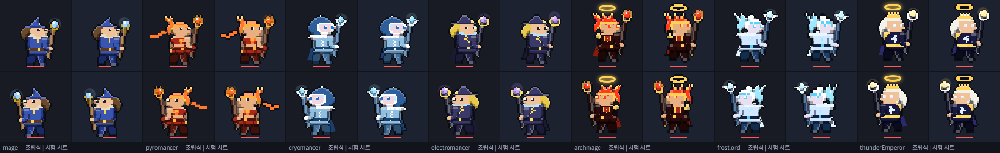
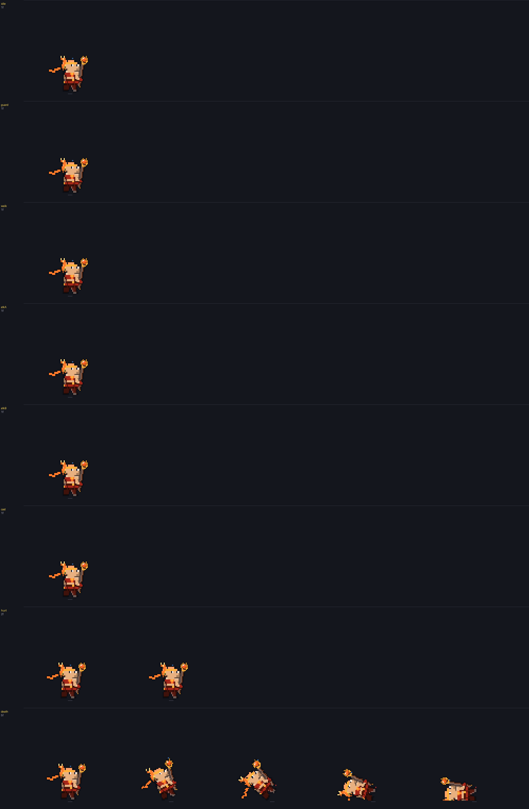

마법사 계열 통짜 시트 — 0회 준비
스펙 docs/specs/legacy-class-sheets.md · 마법사 · 화염술사 · 빙결술사 · 뇌전술사 · 대마도사 · 빙결의 군주 · 뇌제 · 2026-10-15
- 7종 기준 그림: 지금 게임 그림을 3배로 찍어 1배 도트로 줄였다. 칸은 96, 발 기준점은 (44, 88)이다. 마력탄·지팡이 빛은 빼고 찍었다.
SHEET_ON에 7종 줄을 넣었다. 모두false이고, 시트가 승인되면 켠다. 주소에?sheets=0을 붙이면 전부 꺼진다.- 동작 키 매핑: 마법사 스킬 자세는 지팡이 기울기
bowA만 줄 때가 있다. 그래서 공용sheetFrame의 cast 조건에bowA를 더했다. cast 줄은key: "bowA"로 프레임을 고른다. - 지팡이 구슬 빛은 시트에 넣지 않는다. 공용
drawHeroSheet가hand점(구슬 가운데)에 코드로 얹는다(sheetStaffGlow). 스킬이 마력을 모으면(pull) 커진다. - 앉기 줄이 없는 기존 직업 시트는 마을·캠프 앉기만 예전 조립식으로 그린다.
- 시트 조립
dev/sheets-mage/build.py: 팔레트 고정, 외곽선 통일, 발 맞춤, hand·head 점을 자동으로 잡는다. guard·hurt·death 는 PixelLab 없이 idle 에서 만든다. - 연결 시험
dev/skills.html?patch=sheets-mage: 기준 그림 한 장으로 만든 시험 시트를 끼워 게임에서 돌린다. 시험 시트는src/sprites에 넣지 않았다.
1. 칸 크기와 발 기준점
| 직업 | 무기 | 칸 | 발 기준점 (x, y) | 지금 리그 최대 범위 (발 기준, 도트) | 여백 (앞 · 뒤 · 위) |
|---|---|---|---|---|---|
| 마법사 | 견습 지팡이 | 96×96 | (44, 88) | x −16 ~ +41 · y −50 ~ +3 | 10 · 28 · 38 |
| 화염술사 | 화염 지팡이 | 96×96 | (44, 88) | x −23 ~ +45 · y −51 ~ +4 | 6 · 21 · 37 |
| 빙결술사 | 서리 지팡이 | 96×96 | (44, 88) | x −13 ~ +45 · y −38 ~ +4 | 6 · 31 · 50 |
| 뇌전술사 | 뇌전 지팡이 | 96×96 | (44, 88) | x −19 ~ +44 · y −55 ~ +4 | 7 · 25 · 33 |
| 대마도사 | 겁화의 지팡이 | 96×96 | (44, 88) | x −22 ~ +47 · y −54 ~ +5 | 4 · 22 · 34 |
| 빙결의 군주 | 빙하의 홀 | 96×96 | (44, 88) | x −16 ~ +47 · y −42 ~ +5 | 4 · 28 · 46 |
| 뇌제 | 뇌제의 홀 | 96×96 | (44, 88) | x −19 ~ +45 · y −59 ~ +5 | 6 · 25 · 29 |
측정: 기사 리그를 1도트 = 1px 로 그려 불투명 범위를 쟀다. 전투 대기, 평타 2종 전 구간(0.05 간격), 스킬 자세(bowA −1.6 ~ 1.2)를 모두 넣었다. 앞쪽 최대값에는 평타 섬광도 들어 있다. 견습 지팡이도 96 칸이다. 스펙 표는 견습 지팡이를 64 칸에 두지만, 평타 때 지팡이 끝이 발에서 앞으로 41칸까지 나간다. 64 칸(발 x 32)이면 앞이 31칸이라 잘린다. 그래서 정할 것 ①에 올렸다. 발 x 를 칸 가운데(48)보다 4칸 뒤에 둔 것은 3차 홀이 앞으로 47칸까지 나가서다.
SHEET_ON 을 켜서 그린 것이다. 윗줄은 오른쪽 보기, 아랫줄은 왼쪽 보기다.
7종 모두 가장 잘 맞는 이동량이 좌우 양쪽에서 (0, 0)이고, 조립식의 불투명 칸을 100% 덮는다. 시트 쪽은 바깥 외곽선 1칸이 더 둘러진다(스펙 "외곽선 #0b0d14 통일").

2. 기준 그림 (지금 게임 그대로, 칸·발 기준점 표시)
빨간 줄은 발 기준점(땅)이고 회색 테두리는 칸 끝이다. 기준 그림은 전투 대기 판이다. 컷 모드라 도트가 깔끔하다(색 39~69개). 대기 판은 구슬 빛 번짐이 섞여 색이 60~140개다. 흑백·실루엣은 같은 계열 구분을 보려고 넣었다. 지금 그림에서도 마법사와 뇌전술사는 둘 다 뾰족 모자라 실루엣이 비슷하다. 다만 뇌전술사는 금발 긴 머리가 다르다. 시트 생성 때 직업 입히기에서 더 벌릴지 정할 것 ③.
3. 동작 키 매핑 (게임 상태 → 시트 줄)
| 줄 | 게임에서 언제 | 프레임 고르는 법 (src/sprites.js sheetFrame) | 만드는 법 (계획 — 승인 전) |
|---|---|---|---|
idle | 캠프·마을 서 있기 (mode stand/idle) | fps 6 반복 | 원형 애니 (PixelLab, 승인 시) |
guard | 교전 중 평타 사이 | fps 6 반복 | idle 재사용, 윗몸 1칸 낮춤 (build.py) |
walk | 원정 이동·결투 접근 | walkT × fps 10 | 원형 애니 — 로브 체형 7종 공유 |
atkA · atkB | 평타 (knight.combo 홀짝) | hit 프레임이 원거리 타격 시점 45% 에 오게 | 앞으로 겨눠 쏘기 / 치켜들었다 내리꽂기 |
cast | 스킬 자세 전부 (pose.bowA·pull) | key: "bowA", val 이 가장 가까운 프레임 — 아래 다섯 키 자세 | 원형 cast 애니 8장에서 다섯 장을 고른다 |
hurt | 맞아서 밀림 (recoil > 0.35) | recoil 크기로 0/1 | idle 1장을 뒤로 2·1칸 + 코드 흰 번쩍임 |
death | 체력 0 (down) | 한 번, 마지막 유지 | hurt 1장을 발끝 축으로 0·25·50·75·90° 넘어뜨림 |
sit | 마을·캠프 앉기 | 줄이 없으면 예전 조립식 앉기 | 기존 앉기 유지 (PixelLab 0) |
cast 다섯 키 자세 — 실제 스킬 자세의 bowA 분포로 정함
| bowA | 자세 | 스킬 시전 중 차지 비율 (7종 × 스킬 × ★0~3, 88회 · 60fps 표본) |
|---|---|---|
| −1.4 | 지팡이를 머리 위로 치켜듦 (메테오·뇌우·궁극기 모으기) | 16% (−1.6 ~ −1.2) |
| −0.7 | 비스듬히 들어 마력을 모음 | 4% (−1.0 ~ −0.6) |
| −0.2 | 세워 들고 집중 (회오리·블리자드 유지) | 42% (−0.4 ~ 0.0) |
| 0.7 | 앞으로 겨눔 (발사 순간) | 22% (0.2 ~ 0.8) |
| 1.2 | 앞 땅에 내리꽂음 (마력 폭발 ★★·궁극기 마무리) | 6% (1.0 ~ 1.2) |
- 몸 이동·띄움·기울임(dx·lift·skew·sx·sy)은 지금처럼 시트 그림 전체에 변형으로 준다.
- 마력탄이 나가는 자리는 시트의
hand점(구슬 가운데)이다.heroMuzzle이 이 점을 쓴다. 구슬 빛(sheetStaffGlow)도 같은 점에 그린다. - 스킬 잔상
onlyWeapon은 시트에선 아무것도 안 그린다. 무기가 그림 안에 있어서다(파이터와 같음).

3-1. 지팡이 원형 마네킹 · 직업 입히기 시안 (정지 그림, PixelLab 0회 · ComfyUI 0장)
2026-10-16 사용자 승인: 뇌전술사 시안 B 확정 · 3차는 2차 시트 편집 · 무기는 공용 "덧그리기". 아래 입힌 결과는 지팡이를 덧그리기로 바꾸고 뇌전술사를 시안 B 머리로 입힌 판이다.
- 마네킹(왼쪽 첫 칸): 견습 마법사 몸에서 모자·머리카락을 빼고 민머리에 눈만 남겼다. 부위마다 다른 색 3단으로 칠했다. 부위는 머리, 몸통(빨강), 바지(파랑), 신발(갈색), 손(금색), 지팡이 자루(초록)·갈래(보라)·구슬(청록)이다. PixelLab 애니가 이 색을 지키면 프레임마다 부위를 색으로 다시 가를 수 있다.
- 입히기 (
dev/sheets-mage/mannequin.py dress):- 머리(모자·머리카락·관·후광)는 직업 그림에서 통째로 옮겨 마네킹 머리 아랫줄 가운데에 맞춘다. 지팡이에 닿은 외곽선은 빼고 옮긴다.
- 몸은 같은 자리 직업 색으로 칠하고, 없으면 직업 부위 3단 색으로 칠한다.
- 지팡이 덧그리기 (공용 방식): 게임이 지팡이를 그리는 도트 표(
stStaffCells)를 7종 × 72각도로 뽑아 두었다(dev/sheets-mage/staffcells.json). 마네킹의 쥔 손 → 구슬 각도에 가장 가까운 각도를 골라 구슬 가운데에 맞춰 찍는다. 외곽선을 두르고, 손은 그 위에 다시 칠한다. 그래서 화염 갈래·서리 결정·뇌전 꺾인 갈래·3차 홀 모양이 그대로 남는다. - 마네킹 밖의 망토·목도리 자락은 몸통과 같은 이동량으로 옮긴다.
- 지팡이 부위 가르기: 지팡이 색만 자루 #ff00ff·갈래 #00ff00·구슬 #00ffff 로 바꿔 한 번 더 찍었다. 두 장의 차이로 칸을 정확히 갈랐다(손이 쥔 자리도).
- 2차·견습은 잘 이어진다: 마법사·화염술사·빙결술사·뇌전술사는 원래 그림과 거의 같다(목도리 자락 포함). 몸 비율이 마네킹과 같아서다.
- 3차는 몸이 5칸 더 크다(키 40 · 2차 35). 그래서 견습 몸 마네킹에 입히면 대마도사·빙결의 군주의 옷 무늬가 어긋난다. → 결정: 3차는 2차 시트 편집으로 만든다. 키 차이로 깨지면 그때 3차용 큰 마네킹 계획서를 낸다.
- 정지 그림은 마네킹과 직업이 같은 자세라 쉽다. 실제 시험은 PixelLab 원형 애니(팔·지팡이가 움직인 프레임)에 입혀 보는 것이다. 검사 계열 시범 결과로 방식이 정해지면 계획서를 다시 낸다.
뇌전술사 실루엣 바꾸기 시안 B — 모자 대신 뻗친 머리 + 뿔 장식 관 (사용자 결정 ③)
- 모자를 지우고 금발을 뒤로 뻗친 다발로 바꿨다. 이마에는 남색 관과 앞쪽 하늘색 보석을 넣고, 관 양끝에서 V 자로 벌어지는 하늘색 번개 뿔 둘을 세웠다. 코드로 그린 손도트 시안이다(
electro_head). - 실루엣: 마법사는 뾰족 모자 하나, 시안 B 는 위로 벌어진 뿔 둘에 뒤로 뻗친 머리다. 흑백·실루엣에서 바로 갈린다. 화염술사(뒤통수 불꽃 다발 + 목도리)와도 틀이 다르다.
- 3차 뇌제는 지금 흰 머리에 금관·후광이다. 시안 B 를 따르면 "뿔 관 → 더 큰 금빛 뿔 관 + 후광"으로 이어진다(3차 편집 때 반영).
4. 생성 계획 (로드맵 세션 제출, 보류)
| 단계 | PixelLab | 내용 |
|---|---|---|
| 원형 (지팡이 마네킹) | 보류 — 검사 시범 뒤 계획서 | idle · walk · atkA · atkB · cast. 사용량 기준: 8프레임 = usage 2, 4프레임 = usage 1 (로드맵 2026-10-16) |
| 나머지 6종 | 0 목표 | 원형 프레임 위에 ComfyUI 로 직업 입히기 (검사 계열 시범 결과를 따름) → 안 되면 직업당 기준 편집 1 + 5동작, 다시 계획서 |
| 합계 | 예상 5 ~ 7, 최대 41 (상한 90) | 지금까지 0회 · 래퍼 dev/sheets-mage/plx.py(응답 usage 합계, 상한 90, 잔량 300 바닥) |
5. 확인 링크
시험 시트 켬 (기준 그림 한 장 — 자리·연결만): 마법사 · 화염술사 · 빙결술사 · 뇌전술사 · 대마도사 · 빙결의 군주 · 뇌제 · 스킬: 화염술사 메테오 ★★★
지금 조립식 그대로: 화염술사 평타 (sheets=0) ·
콘솔 sheetsMage.diff('pyromancer') = 같은 자세를 조립식·시트로 그려 다른 칸 수
6. 수용 기준 (이번 준비 단계)
| 기준 | 상태 |
|---|---|
| 계열 7종 시트로 그려지고 동작이 움직인다 | 생성 보류 — 아직. 연결은 시험 시트로 확인했다: walk·idle·guard·평타 2종 번갈아·cast·hurt·death·앉기(조립식) |
| 어떤 동작에서도 무기 끝이 칸에서 잘리지 않는다 | ✅ 지금 리그 전 동작이 96 칸 안이다(1절, 앞 여백 4칸 이상). 생성 뒤 동작별 프레임 몽타주로 다시 본다 |
| 기존 그림과 그림체가 이어지고 2차·3차가 흑백 실루엣으로 구분된다 | 기준 그림은 기존 그대로다(2절). 시트 생성 뒤 비교한다 |
| 스킬 시전·궁극기·결투·레이드·마을이 깨지지 않는다. 전 직업 시전 예외 0 | ✅ 시험 시트를 켠 채 7종 × 스킬 × ★0~3 = 88회 시전, 평타 각 4초 → 예외 0 |
SHEET_ON 을 끄면 예전 조립식 | ✅ 7종 줄 false. 시트가 없으면 켜도 조립식(heroSheetOn), ?sheets=0 이면 전부 끔 |
| fps 가 떨어지지 않는다 | ✅ 4명 × 300번 그리기: 조립식 1,072ms → 시트 3.9ms (이음새 정리 getImageData 가 빠짐) |
| PixelLab 사용량 기록 | ✅ 0회 (dev/sheets-mage/usage.md 는 첫 호출 때 생긴다) |
7. 정할 것
- 견습 지팡이(마법사)도 96 칸 → 확정 (2026-10-15 사용자).
- sit 는 기존 조립식 앉기 유지 → 확정 (2026-10-15 사용자).
- 뇌전술사 실루엣 → 시안 B 확정 (2026-10-16 사용자).
- 3차 → 2차 시트 편집, 깨지면 그때 큰 마네킹 계획서 (2026-10-16 사용자).
- 남은 것: PixelLab 원형 애니 계획서 — 검사 계열 시범 결과가 나온 뒤 낸다 (사용량 기준: 8프레임 = usage 2, 4프레임 = usage 1).